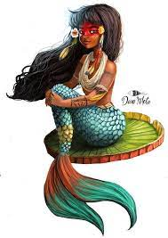

A lenda da Cuca afirma que a personagem era uma mulher idosa, assustadora e que praticava maldades,
como sequestrar as crianças desobedientes. Cuca andava pelas ruas espiando as casas que tivessem alguma criança que não estivessem dormindo cedo ou que não cumprisse as ordens dos pais.
A lenda era contada para que as crianças ficassem amedrontadas e fossem sempre obedientes.
Outra versão para a lenda diz que, a cada mil anos, surgiria uma nova Cuca, que assumiria o lugar da antiga
, que, por sua vez, se transformaria em um pássaro de canto triste. A Cuca que acabava de surgir deveria continuar as maldades da antecessora ou até ser mais maldosa.
A personagem mítica já existia na península Ibérica e teria vindo para a América durante o
período da colonização. No entanto, os portugueses chamavam-na de Coco. De acordo com o folclorista Luís Câmara Cascudo, a origem da Cuca está em Portugal e lá ela era chamada de Santa Coca, aparecendo nas procissões da província do Minho. Nessa província, coca era o nome de uma abóbora que era perfurada em várias partes, inserindo-se velas nela, tal como no Halloween norte-americano.
Sitio do Picapau Amarelo
Cuidado com a Cuca
Que a Cuca te pega
E pega daqui
E pega de lá
Cuidado com a Cuca
Que a Cuca te pega
E pega daqui
E pega de lá
Cuidado com a Cuca
Que a Cuca te pega
E pega daqui
E pega de lá
Cuidado com a Cuca
Que a Cuca te pega
E pega daqui
E pega de lá
A Cuca é malvada
E se fica irritada
A Cuca é zangada
Cuidado com ela
A Cuca é matreira
E se fica zangada
E Cuca é danada
Cuidado com ela
Cuidado com a Cuca
Que a Cuca te pega
E pega daqui
E pega de lá
Cuidado com a Cuca
Que a Cuca te pega
E pega daqui
pega de lá
A Lenda da Iara, também conhecida como Lenda da Mãe d’água, faz parte do folclore brasileiro.
Trata-se de uma lenda folclórica de origem indígena, oriunda da região amazônica
Apesar de ser originária dessa região, a Lenda da Iara é conhecida em todo Brasil.
Iara ou Yara, do indígena Iuara, significa “aquela que mora nas águas”..
É uma sereia (metade mulher, metade peixe) que vive nas águas amazônicas. .
Muitas vezes, a figura de Iara é confundida com o orixá africano Iemanjá, a rainha do mar..
Reza a lenda que a Iara era uma corajosa guerreira dona de uma beleza invejável.
Por esse motivo, os irmãos sentiam inveja dela e resolvem matá-la.Todavia, no momento do combate, pelo fato de possuir habilidades guerreiras, Iara consegue inverter a situação e acaba matando seus irmãos.
Diante disso, com muito medo da punição de seu pai, o pajé da tribo, Iara resolve fugir, mas seu pai consegue encontrá-la.
Como castigo pela morte dos irmãos, ele resolve lançá-la ao rio.
Os peixes do rio resolvem salvar a bela jovem transformando-a na sereia Iara.
Desde então, Iara habita os rios amazônicos conquistando homens e depois levando-os ao fundo do rio, os quais morrem afogados.
Acredita-se que se o homem consegue escapar dos encantos de Iara ele fica louco, num estado de torpor e somente um pajé poderá curá-lo.